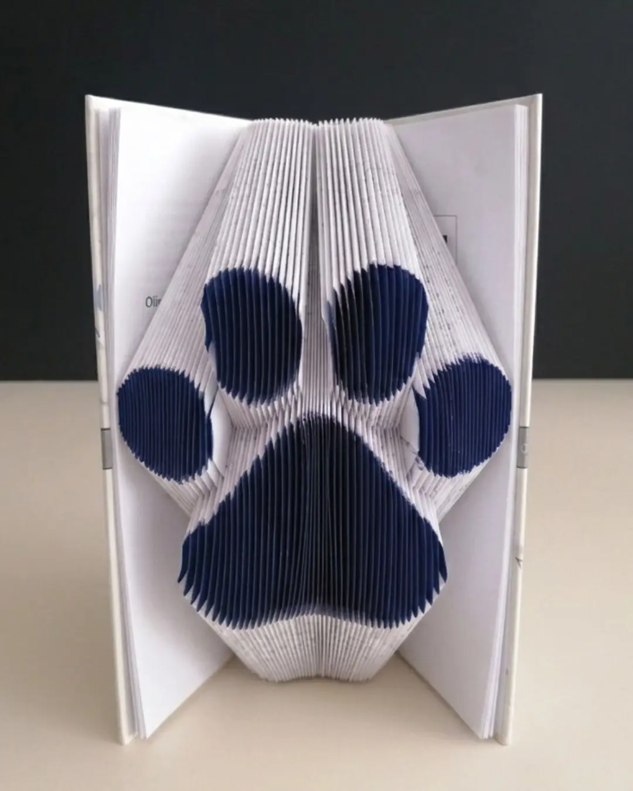
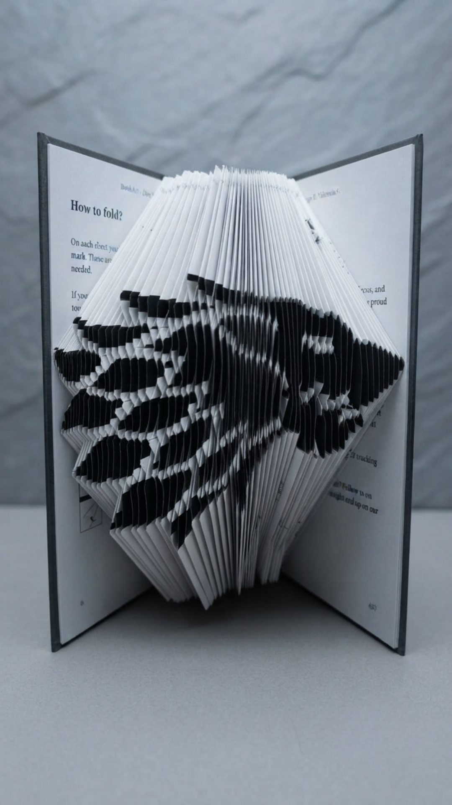
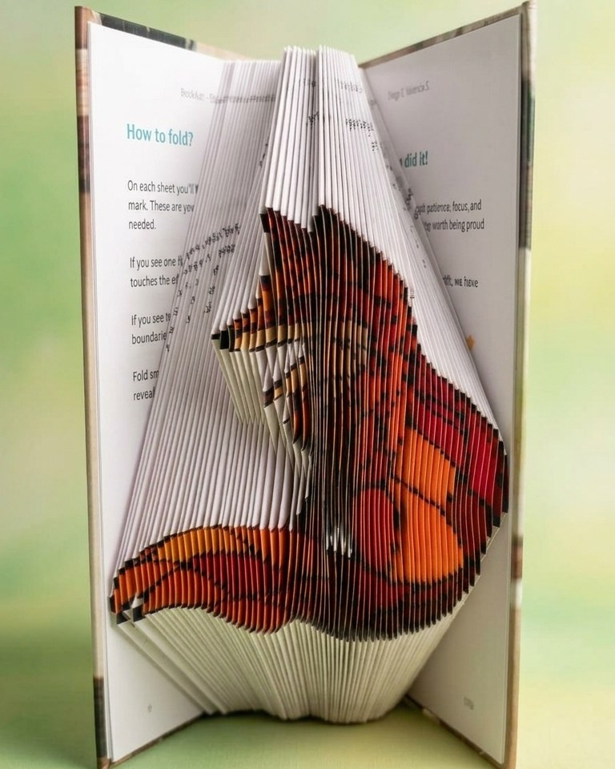
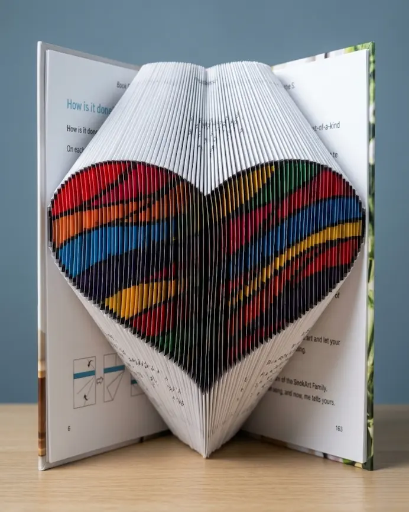

There are three kinds of design, and the difference between them is not difficulty. It is what you want to see on your shelf when you are done.
This guide is so you can choose on purpose instead of by accident.
The classic: the figure lives in the relief
In a classic BookArt the pages stay white. The figure does not appear through color, it appears through shape. The folds create depth, shadow and relief, and the silhouette emerges from the volume of the paper itself.
This is book folding in its purest form, the same one paper artists have practiced for decades. It is also where the technique shows itself most honestly, because nothing else is helping. What you see is the exact result of your hands.
It is the natural way in. If you have never folded a book before, this is where you understand the logic of the process without distractions.
And you can paint it
There is a second reason to love the classic, and it is one most people do not think about at first. Because the pages are plain white, the finished sculpture can be painted.
Once the figure is folded and standing, it becomes a blank canvas. You can color it to match a room, to match a team, or to match the person you are giving it to. The fold is BookArt's, the color is yours.

That makes a classic design the most personal of the three. Two people can fold the same book and end up with two pieces that look nothing alike.
The black: contrast you can see from across the room
In the black designs, part of every page comes printed in black. As you fold, those areas line up and form a high contrast silhouette against the white of the paper.
The effect is immediate. Where the classic asks you to come closer to appreciate the relief, the black design announces itself from the other side of the room. It is graphic, it is bold, almost like a poster in three dimensions.

That is why it works so well with figures defined by a strong outline. A skull, a wolf, a guitar, a helmet. Shapes you recognize by their contour alone, without needing any detail inside them.
Every BookArt design in one place, filtered by type and by occasion.
Browse the collection →Full color: the one that does not exist anywhere else
This is where BookArt is actually different.
A downloadable book folding pattern gives you measurements. A pre marked book gives you the guides printed on the page. But a full color BookArt gives you something you cannot get any other way: a paper sculpture that also has color.
Each page carries the portion of color that belongs to it. While you fold, it is not only a shape that appears. A palette appears with it.

The Stained Glass Fox moves from deep crimson through burning orange into golden yellow, like light coming through a stained glass window. The Wavy Heart is an explosion of color that is impossible to ignore on any shelf.

And this matters for a technical reason worth understanding. Color cannot be improvised. It does not exist in a downloadable pattern. It does not exist in a book you buy at a bookstore. It requires the design and the printing of the book to be calculated together, page by page, so that when you fold, every portion lands exactly where it should.
That is precisely what BookArt does, and it is the reason a full color design costs more than a classic one. You are not paying for a different technique. You are paying for a book that was printed to become a specific image.
If you are only ever going to fold one book in your life, make it a color one.
One more thing we are thinking about
Here is a question we keep coming back to.
You already know you can paint a classic design after folding it. And you have just seen what a full color design looks like, with detail down to the individual fold.
So: can you imagine coloring a BookArt yourself, with the same level of detail as the butterfly or the fox? A book where every fold zone is numbered, and you decide the palette.
It does not exist yet. But it might, and if it sounds like something you would want, tell us on Instagram. That is genuinely how we decide what to design next.
So which one do I choose?
Choose the classic if you want to understand the technique, if you like things minimal, if it is your first BookArt, or if you want the option of painting it yourself afterwards.
Choose the black if you want something that gets noticed, if it is a gift for someone with a defined personality, or if the figure you like is one you recognize by its silhouette.
Choose full color if you want the most striking piece possible, if it is an important gift, or if you simply want to make something nobody else is going to have.
None of them is harder than the others. All three fold the same way. The difference is what you want to be looking at when you finish.
Frequently asked questions
Classic, black, or full color. Every design is pre marked and ready to fold, with no experience needed.
Shop all designs on Amazon ↗